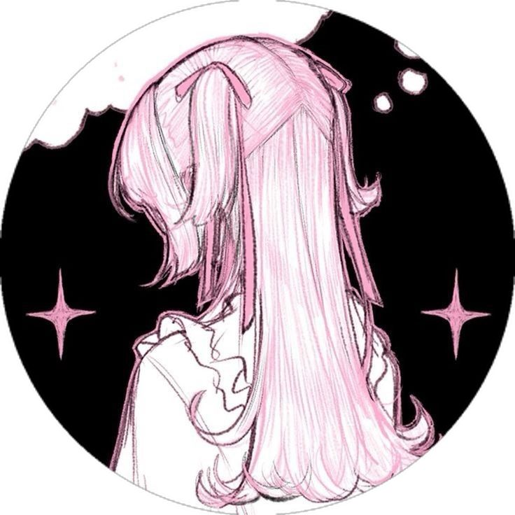

🌸 Sobre Mim 🌸
🐰 Quem sou eu?
Olá! Meu nome é Helen Sabryni Koenig, tenho 18 anos e sou natural de Ipiranga - PR.Sou apaixonada por tecnologias e livros e sempre busco aprender as coisas com entusiasmo e criatividade para deixar os dias mais leves e felizes para todos que me rodeiam.
💖 Sobre
Estou cursando Análise e Desenvolvimento de Sistemas e quero seguir na carreira de desenvolvedora.
Meu objetivo é criar soluções tecnológicas que ajudem as pessoas no dia a dia, sempre com um toque de delicadeza e criatividade! 🌼
🌸 Hobbies
Meus hobbies incluem programação, leitura, pintura, desenho tudo que relaxa e de paz a alma!💻📚🎮🍨🤸🏻